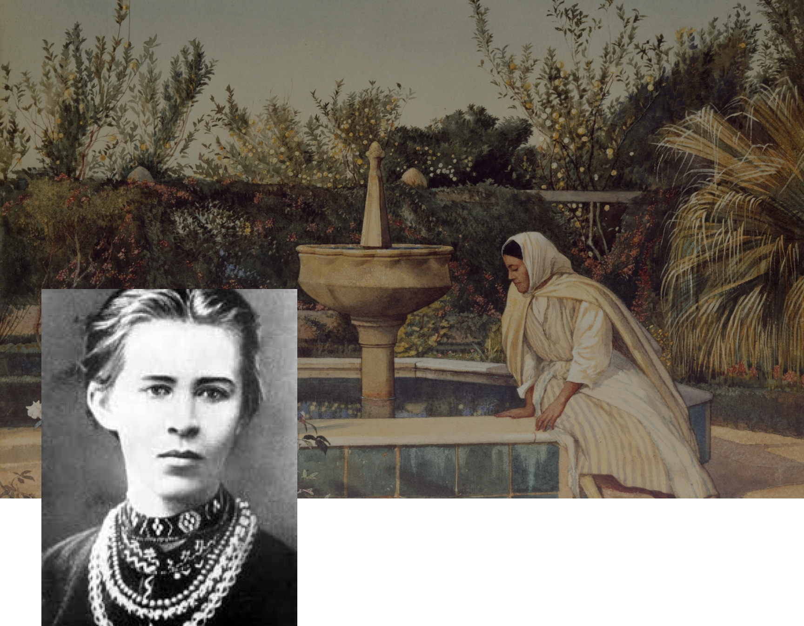
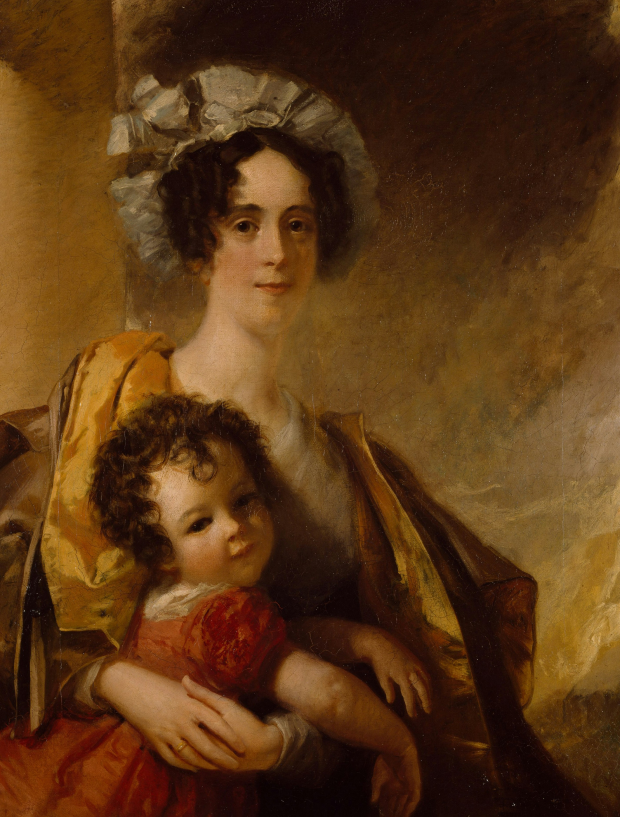

Леся
Українка
Одна з найвидатніших постатей української літератури, відома як поетеса, драматургиня, перекладачка та культурна діячка, яка значно вплинула на розвиток української літератури та національної свідомості.
Біографія

Моменти, що формують

Леся Українка,її справжнє ім'я Лариса Косач, народилася 25 лютого 1871 року у Новограді-Волинську. Леся виросла у родині інтелігентів, де панувала глибока любов до української культури та літератури. Її мати, Олена Пчілка, була письменницею, а батько, Петро Косач, — юристом. Завдяки родині Леся з раннього віку познайомилася з творчістю Тараса Шевченка, а також із класичною європейською літературою. Вона почала писати вірші з дев'яти років.
У 1879 році родина Лесі Українки переїжджає до Луцька. У березні трапляється подія, яка сильно вплине на маленьку Лесю: її улюблену тітку Єлизавету (в родині — «тітку Єлю») арештовують за участь у замаху на шефа жандармів Дрентельна, а 1881 році, тітку Єлю засилають до Сибіру на 5 років. Глибоко вражена цією новиною, дівчина пише свій перший вірш «Надія».
6 (18) січня 1881 року під час святкування Водохреща десятилітня Лариса сильно застудилася, що призвело до туберкульозу кісток та суглобів.
Через рік Косачі переїжджають у село Колодяжне, а тим часом Лариса з Михайлом живуть у Києві, вчаться у приватних вчителів.
У 1883
У 1897
У Лариси діагностували туберкульоз кісток, у жовтні професор Олександр Рінек прооперував їй ліву руку. Через хворобу Леся не могла навчатися в школі, тому здобувала освіту самостійно. Вона вивчала іноземні мови, філософію, історію, літературу, опанувала французьку, німецьку, італійську, польську та англійську мови. Це дало їй змогу знайомитися з європейською літературою в оригіналі та перекладати класичні твори на українську.
Історію особистих стосунків Лариси Косач часто розпочинають із Сергія Мержинського, з яким познайомилася у Ялті 1897 року під час лікування сухот. Називаючи ці стосунки «дружбою», а не «коханням», Косач їде до Мінська попри заборону матері, щоб доглядати хворого,але через 4 роки Сергій помирає.
У листопаді 1898 року Косач знайомиться з 18-літнім першокурсником Климентом Квіткою в гуртку Київського університету та пропонує йому записати від себе пісні, які захоплено збирає фольклорист. Згодом знайомство переростає в стосунки.
У 1907 році вони одружились і прожили в шлюбі до смерті письменниці
Особливими стали стосунки Лесі Українки та Ольги Кобилянської. Особисто письменниці познайомилися в 1899 і знайшли одна в одній духовну спорідненість, розуміння, підтримку і любов.
Використовуючи в листуванні особливу ніжність та активно обмінюючись ідеями і поглядами на становище жінки в Україні та Європі, мисткині засвідчили цим «процес радикального переосмислення свого я» на знак протесту проти патріархальної культури", що збагатило український літературний модерн феміністською перспективою.
19 липня 1913 року
Виснажена хворобою, Лариса Косач-Квітка померла в Сурамі у 42-річному віці. Похована на Байковому кладовищі в Києві.

“Бояриня”
Твір Лесі Українки «Бояриня» - патріотично-феміністична драматична поема,написана впродовж трьох днів у місті Хельвані . Це один з небагатьох драматичних творів української літератури, який досліджує питання національної самосвідомості, патріотизму та впливу соціально-політичних обставин на особисте життя людини.
Драма розповідає про трагічну долю української дівчини Оксани, яка виходить заміж за Степана, посланця українського гетьмана в Московії. Вона переїжджає до Москви, але швидко розуміє, що життя там значно відрізняється від звичного їй вільного та гордого українського побуту.
У московському середовищі вона стикається з суворими правилами, що обмежують права жінок, забороняють спілкуватися з іншими, а головне – підкорюють кожного царській владі. Оксана дуже сумує за Батьківщиною і відчуває себе чужою в новій країні, де немає ні свободи, ні права на власну думку.
Її особисте нещастя стає символом поневолення України, адже вона болісно сприймає пасивність чоловіка та його покору московському режиму. Прагнення героїні повернутися додому так і не здійснюється: вона важко хворіє й вмирає на чужині, втративши надію на свободу й повернення в Україну.
Головна героїня представляє не лише українську жінку, але й сильну, незалежну особистість, яка прагне відстоювати власні погляди і не буде миритися з несправедливістю. Оксана потрапляє в Московію, де життя обмежене жорсткими патріархальними правилами. Там жінка має коритися своєму чоловіку й приймати відведену їй пасивну роль, що різко контрастує зі ставленням до жінки в Україні.
Оксана прагне діяти, брати участь у суспільному житті та відчувати себе значущою, проте, у нових обставинах, її роль зведена до мовчазного підкорення, що її пригнічує. Чоловік Оксани вважає, що їхнє щастя залежить від пристосування до правил Московії та беззаперечної покори. Проте Оксана не може і не хоче так жити, адже для неї важливі самовираження, внутрішня свобода та збереження особистих переконань. Вона постає як символ внутрішньої боротьби жінки за право бути собою, а не просто пасивною виконавицею волі чоловіка.Через «Бояриню» Леся Українка демонструє, що жінка має право на вибір і самореалізацію навіть у суспільствах, де панують патріархальні норми.